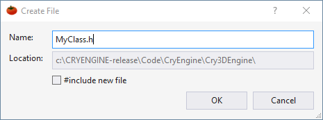

Create File
Create a file in the current project, in the directory of the active document, without interrupting your workflow. Find the Create File command in the context menu of the text editor, or by opening the Quick Action and Refactoring menu (Shift+Alt+Q) from global scope in the active document.
In C/C++, run the command twice to create both header and cpp. When creating a header, Visual Assist can include the new file in the current document.

Learn more.